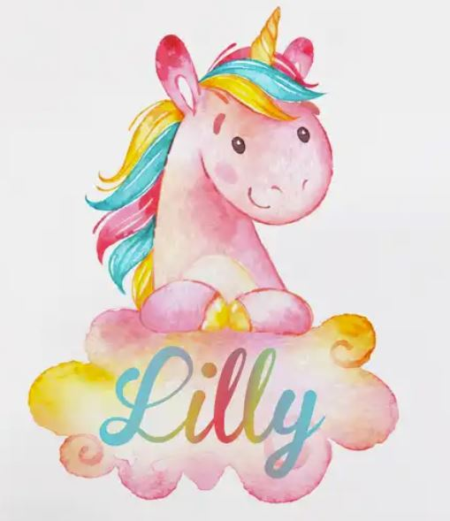
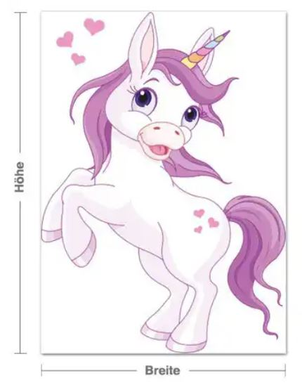

Weihnachtsgeschenke für Max und Marie
Hier ist eine Liste von Weihnachtsgeschenksideen über die sich Marie und Max freuen würden.
Falls ihr etwas von der Liste besorgen wollt, gebt uns bitte Bescheid, und wir tragen euren Namen dazu ein (damit es keine Doppelgeschenke gibt :-))
Gerne könnt ihr auch einfach etwas Bares dazugeben und wir besorgen die Geschenke. ❤
Max
- Brett und Kartenspiele, Ideen: Trivial pursuit family edition, Activity, Spiel des Lebens, Skippo für Kinder (Was Maxi schon gefällt und wir haben: Uno, Clown Würfel-Spiel, Looping-Lui)
- Lego und anderes Konstruktionsspielzeug ist immer hoch im Kurs
- Max wünscht sich auch glizernde Kleidung gerne auch mit Regenbogen und Einhörnern. Oder T-Shirts mit Wende-Pailletten. Bitte keine Pullover. Wenn dann Jacken mit Reisverschluss. Grösse 122. Beispiel: 1, 2
- Süssigkeiten-Automaten:
- Eine Mappe zur Aufbewahrung von Zeichnungen
- Omi: Einen grossen und einen kleinen Zeichenblock
- Omi: Federpenal: natürlich glitzer, Einhorn, Regenbogen
Marie


Besorgen die Eltern, man kann aber sehr gerne was dazu beisteuern :-)
- Schminkspiegel:
- Playmais:
- Einen Schreibtisch für Max: von Ikea
- Einen Schreibtischstuhl für Max: von Ikea
- Ein echtes Handy für Max: wird eines von unseren alten werden
- Für Beide: einen Baldahin, Betthimmel, Bettzelt (Regenbogen und Einhorn Motiv) Beispiele:
- Bettwäsche
- Nachtlicht
-
Für Beide: Wandsticker mit Einhorn/oder Regenbogen:
von klebefieber: mit namen, einhorn, rosa  - Einhorn weiss und Lila, sehr süss 
- von amazon